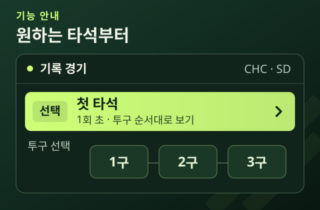

01 / SELECT
볼 공을 고르세요.
타석의 투구 순서를 누르거나 선수·카운트로 공을 찾습니다. 선택한 공의 영상과 기록이 함께 바뀝니다.
추천은 비교의 출발점입니다. 공 하나의 결과만으로 좋은 선택과 나쁜 선택을 단정하지 않습니다.
첫 타석 열기그림은 기능 안내이며 실제 경기 수치가 아닙니다.

타석의 투구 순서를 누르거나 선수·카운트로 공을 찾습니다. 선택한 공의 영상과 기록이 함께 바뀝니다.

저장된 구종 후보와 선택 비중을 확인합니다. 추천 위치는 과거 투구 분포의 근사이며 최적의 목표점은 아닙니다.

실제 구종·판정·타구 결과는 클립 종료 뒤 공개됩니다. 실제 공의 점은 포구 지점이 아닌 플레이트 통과 위치입니다.
추천 비중은 성공 확률이 아닙니다. 위치와 비중의 의미를 알고 비교하면 더 명확해집니다.
세 경기의 투구별 영상과 기록을 볼 수 있습니다. 컵스–파드리스는 추천 비교까지, 필리스–브레이브스와 레이스–필리스는 실제 구종·위치·결과를 제공합니다. 연속 중계 영상이나 실시간 생중계는 아닙니다.
새 두 경기는 추천 파일을 아직 받지 않아 ‘추천 자료 미제공’으로 표시합니다. 모델이 해당 경기를 지원하지 못한다는 뜻은 아닙니다. 다른 경기의 추천을 복사하거나 실제 결과로 추천을 만들어 채우지 않습니다.
세 경기에서 골라 보기필리스–브레이브스는 70타석·250구·영상 250개입니다. 레이스–필리스는 88타석, 실제 투구 355구와 자동 볼 4건을 합친 진행 기록 359건입니다. 자동 볼에는 던진 공의 영상이나 좌표를 붙이지 않습니다.
경기 탐색바는 투구 순서입니다. 놓으면 고른 공의 0초로 이동합니다. 영상 재생바는 현재 클립 안에서 원하는 시각으로 이동합니다.
다시 재생을 시도하거나 ‘상세 분석’에서 같은 공의 결과를 직접 공개하세요. 컵스–파드리스 첫 3구 외 영상은 MLB 서버 연결이 필요합니다.
컵스 대 파드리스 경기는 현지 2026년 9월 29일, 한국 9월 30일 경기입니다. 추천은 246구, 미지원은 16구이며, 구종 기록이 다른 1구는 영상을 제외했습니다.
컵스–파드리스 첫 3구는 AI가 프레임으로 확인한 공 도착·접촉 구간의 상한부터 실제 위치를 표시합니다. 나머지 클립은 종료 뒤 위치를 표시합니다. 실제 구종·판정·타구 결과는 모든 투구에서 클립 종료 뒤 공개합니다. 정확한 단일 포구 프레임이나 전 경기의 정밀 동기화를 검증한 것은 아닙니다.
이어보기는 클립 종료 뒤 결과를 5초간 보여주고 다음 공으로 넘어가며, 영상이 없거나 오류가 나면 멈춥니다. 경기 후 저장 자료이며 당시 실시간 예측을 입증하지 않습니다. 모든 MLB 경기·선수를 지원하는 서비스가 아닙니다.
결과 예측 모델은 상황과 후보 공에 따른 결과 확률을 계산하고, 추천 정책은 그 결과를 바탕으로 선택지를 비교합니다. 예측이 좋아졌다는 것과 추천을 따르면 실제로 더 유리하다는 것은 별도로 평가합니다.
컵스–파드리스 화면에는 저장된 추천 후보·선택 비중·근사 위치가 연결돼 있습니다. 다른 두 경기는 추천 자료 미제공 상태입니다. 모델 내부의 사건확률이나 선택별 기대가치는 현재 자료에 포함되지 않아 표시하지 않습니다.
위 수치는 연결된 보고서와 운영 기록을 인용했습니다. 현재 사이트에서 새로 측정한 결과가 아니며, 예측·계산 속도·추천 제공 수·추천 효과는 서로 다른 측정입니다.
관전 화면의 ‘영상 분석(연구)’에서 ‘미트 가로 관측’을 켜면 클립 종료 뒤 받은 셋업 추정의 가로값을 별도 축에서 볼 수 있습니다. 자료가 없거나 판독을 기권한 공은 그 상태를 표시합니다. 현재 영상 프레임과의 대응·높이·투수 의도는 검증되지 않았으므로 존 위에 점을 겹치거나 제구 오차를 계산하지 않습니다.
받은 경기 자료의 셋업 추정과 별도 CV 관측은 출처가 다른 기록입니다. 근거 이미지는 투구 ID와 출처를 대조한 뒤 추가합니다.
미트 관측이 곧 투수의 목표를 뜻하지는 않습니다. CV가 없는 경기에서도 추천과 실제 결과를 비교할 수 있습니다. 별도 CV 연구 화면의 39구 관측과 2경기·86장 평가는 현재 경기 전체나 추천 모델의 정확도를 검증한 결과가 아닙니다.
CV 연구 기록팀 로고는 MLB 정적 자산(www.mlbstatic.com)을 사용했습니다. 경기 영상은 연결한 MLB 공식 영상이며, 관전 화면에서 각 출처를 확인할 수 있습니다. 기능 안내 그림은 화면의 사용 순서를 설명하기 위한 도식으로 실제 경기 측정값이나 AI 검출 결과가 아닙니다.
Pitcheezy는 MLB와 제휴한 공식 서비스가 아닙니다. 추천·평가 수치의 출처는 위 모델 근거에 연결했습니다.